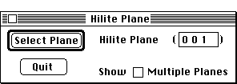

Distributed By: Virtual Labs
Hilite Plane Dialog Box:
PATH...{Real Lattice}:Info Menu::Hilite Atom Plane...

Hilite Planes Dialog Box
Use this dialog box to highlight a plane of interest while retaining all
the lattice atoms. This dialog box is accessed from the Info Menu by selecting
the Hilite Atom Plane... item. Type in the desired plane and click on the
Select Plane button to see the plane of interest. Activating the Show Multiple
Plane option will highlight all atoms which fall on integer planes of the
specified type from the origin.
Author: J.ames T.
Stanley
 Desktop
Manual:Dialog Boxes
Desktop
Manual:Dialog Boxes
Distributed By: Virtual Labs
Last Updated:1/12/96 Sat, Apr 27, 1996